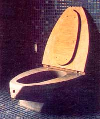

Though it's not a glamorous topic, it's time for folks (since we all need water) to think about ...
"While we live, our bodies are moving particles of the earth, joined inextricably both to the soil and to the bodies of other living things."
Every single time a conventional toilet is flushed, about 40 pounds of potable water is dirtied ... usually in the process of carrying away less than a pound of human excrement. Furthermore, each day, the average U.S. citizen pushes the "out of sight, out of mind" handle seven times, and in a year, 13,000 gallons of fresh H 2 0 rush off ... to dispose of enough nitrogen, phosphorus, and potassium to fertilize a 50' X 50' garden!
Of course, there's no question that the modern porcelain "throne" (and the effective sanitization facilities to which it's connected) has played a major role in reducing disease in the twentieth century. But as we approach the year 2000, the price of sewage treatment as we know it threatens to become higher than we can afford to pay ... in terms of both dollars and human health.
Today, about 70% of all U.S. households are connected to centralized waste treatment facilities. And on the average, those plants represent between $500 and $600 of capital per individual served. In fact, sewage treatment is one of the largest public works projects ever undertaken ... having absorbed more than $35 billion to date, and estimated to require another $115 billion by the turn of the century. Worse yet, despite that incredible outlay, serious questions about the long-term health effects of the use of the residues left after treatment have yet to be answered.
The remaining 30% of U.S. households are served by personal disposal facilities ... usually a septic tank and drainage field. When working correctly, these systems don't result in direct runoff to streams-nor do they add to public indebtedness-but they have been singled out as the largest source of ground-water contamination (see the article on page 26 for more about the problems that face our underground water supplies).
So when the numerous liabilities of the Thomas Crapper water closet (yes, that is the name of the man who developed the flush toilet) are consideredfrom water consumption to pollution and from outright treatment cost to the waste of valuable organic matter-there's little doubt that the commode must change dramatically ... and soon!
The following article describes several approaches that can be used to reduce water consumption for waste disposal and-in a few cases-turn that waste into useful products. While some of these techniques do a more thorough job of protecting the environment than others, any one of them would be a significant improvement over the conventional high-volume toilet.
As many people know, there's no reason why five gallons of water must be wasted to flush a conventional toilet. With bricks (or water-filled plastic bottles) placed up right at each end inside the tank, adequate flushing pressure-which is a function of the level in the reservoir-can be maintained while less water is consumed. Commercial dams that can be inserted around the outlet from the tank serve roughly the same purpose. These simple methods can cut the water used in flushing by 20%.
Another worthwhile approach is to tune to each situation the amount of liquid that's flushed. Two-stage valves can be manipulated to discharge a much smaller amount of water when there are only liquids to be disposed of. You'll be glad to know, too, that none of these "remedies" requires a cash outlay of more than $ 10 ... a sum that the water savings provided by such devices should pay back in short order.
If you're in the market for a new toiletor if you feel so strongly about the wasteful nature of your present throne that you're willing to replace it-one option is to purchase a low-volume conventional water closet. Almost all bathroom fixture manufacturers are now offering what they call "water-saving toilets". Be wary, though ... the best of these products can get by with as little as a gallon of water per cycle, but many of them still dispatch as much as three and a half gallons per flush.
Furthermore, when compared with composting toilets-which use no water and recycle the waste-low-volume commodes don't rate high on the environmental chart ... but using one or two gallons per flush certainly does compare favorably with wasting five. (Besides, these conventional-looking thrones are more likely to meet with approval from building inspectors and future buyers of your home than are composters.)
Water use in liquid-driven disposal systems can be reduced to less than a gallon per cycle if some other force in addition to gravity is employed to help drive the water down. The two most common approach are positive and negative pressure... wherein the system is either placed in a partial vacuum or is pushed by compressed a Since such setups require an auxilia power source (either a vacuum pump or compressor) to get the job done, thoug they're comparatively expensive and do require some source of (usually electric energy. At present, they're most commonly used in large, multiresidence buildin where the hardware can be centralized.
In areas that have no central sewage trea ment and severe soil and ground-water lim tations on septic tanks and drainage field ... chemical, incineration, oil, and on-site treatment facilities are the options most often selected.
Many people have probably encountere the basic chemical toilet in the form of po table outhouses ... the units that usually give off a sweet "chemical" odor. Whateve form they take, though, such toilets are really nothing more than sanitary holding tanks, and no processing of the content takes place within the device.
Incineration toilets, on the other had use either gas or electric heat to turn wast to ash. They yield a sterilized effluent that's considerably reduced in volume, but do require a lot of energy.
Oil systems carry waste to a central holding tank ... using a medium that won't mix with the products being disposed off. The mineral-based oil then floats to the top of the contents of the holding tank and is picked up and pumped back to the fixture for reuse. Residential models will hold year's worth of waste for a family of four. .. after which the holding tank must pumped out and the waste trucked off for proper disposal.
On-site processing systems (of which the septic tank with drainage field is one example) don't necessarily save water, but neither do they burden community sewage treatment plants. One version relies on aerobic processing, and resembles a wella-erated septic tank but employs a different biological process. A system is also available, on a limited basis, that recycles all of the water used in a household ... and though it's rather expensive at this time and requires semiannual maintenance by skilled technicians, it may become more practical and affordable in years to come.
Human waste can be broken down by natural biological processes that, if properly maintained, render it safe and useful for fertilization of certain types of plants. The mechanism by which decomposition takes place is roughly the same as that which cuts in a garden compost pile, and consists of bacteria that thrive in an environment well supplied with air. Both biological action and-to some extent-the heat generated by it are responsible for the sterilization of the waste.
Very generally, composting waste disposal systems can be divided into two types: privies (where the waste is removed periodically for composting in a separate bin) and toilets (where most of the biological action takes place within the receiving chamber). In addition, though composting privies are often located separate from the residential structure and frequently don't bear much physical resemblance to the conventional toilet, they are distinct from the traditional outhouse (in which the little decomposition that does take place is anaerobic).
In use and maintenance, a composting toilet or privy requires more care than do most of the other alternatives we've mentioned. For one thing, material that's rich in carbon (vegetable matter) must be added, with each use, to balance the nitrogen present in human waste (a 30:1 C-to-N ratio is ideal for decomposition). The contents may also have to be stirred occasionally, and-once every year or so-some totally decomposed matter can be removed.
Studies have shown that the residue left by a properly functioning composter has very few remaining pathogens. Nonetheless, the potential for disease from incorrectly processed human waste should not be ignored. To date, few experts recommend that the humus from a composter be used to fertilize anything other than ornamental plants, and it's quite likely that local health regulations will prohibit any above-surface disposal. In time, though, the confidence of' health experts may increase, and the state of technology and its application may improve enough to allow more fruitful use of decomposed human waste.
Commercial composting toilets are for the most part very well engineered and backed by caring people. Still, the prices of such units may exceed many folks' budgets ... particularly because some sort of system to dispose of gray water (liquid from sinks, bathtubs, etc.) will have to be set up,
in addition to the commode, to handle that liquid waste. The accompanying commentaries are from people who've built their own composting toilets ... often, at least in part, to avoid the expense of buying a commercial unit. Zandy Clark is one of the foremost designers of do-it-yourself composting toilets and privies, and the model he's presenting takes a unique approach to solving the all-too-frequent problem of excess liq uid. And Kathy Dahl, in her report, mentions that difficulty and relates her solution. We hope you'll profit from both of these individuals' expertise-through- experience.
EDITOR'S NOTE: If you're seriously considering using or building an alternative waste disposal system, you'll want to take advantage of the top-notch written material that's available. For an overall guide through the wonders of waste disposal, you'll want to read Goodbye to the Flush Toilet edited by Carol Hupping Stoner (Rodale Press, $10.95) and/or The Toilet Papers by Sim Van der Ryn (Capra Press, $5.95). Also, for just about everything you can imagine wanting to know about the proper use of gray water, look into Residential Water Re-Use by Murray Milne, which can be purchased for $10 from the Director's Office, Dept. TMEN, Water Resources Center, University of California, Davis, California 95616.
|
 |
|
|